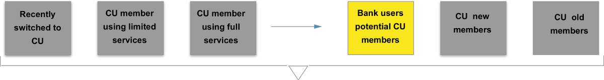

Patelco Case Study
Client
Patelco is a federally insured, not-for-profit, full-service credit union that offers the same types of products and services as large banks. Like all credit unions, it is based on the principle of cooperation in which people help each other in order to achieve similar financial goals.
Challenge
Patelco has not upgraded their digital offering in years and are seeking a fresh approach that leverages some of the forward thinking technologies/techniques that other upstart financial institutions have been able deliver on.
Problem
Patelco's website is not helping potential members in their decision to join. Also, it doesn't offer enough information about what is a Credit Union and the advantages they have over banks.
Solution
Create an informative homepage that provides the necessary information to guide curious users to contact Patelco for more information.

Design Process
Competitor Analysis
We began the project by comparing banks, other credit union and the services offered by Patelco. We learned that big banks are able to offer short-term cash incentives to new customers that non-profit credit unions are unable to match.
Contextual Inquiry
We went to a local branch where we interviewed some of Patelco's members. During the interview, we learned about the services they used and areas of improvement for Patelco.
We researched Patelco, who they are, how to become a member, Patelco’s vision, goals and focus in the community.
We learned that customers choose Patelco because they have better rates, a more personalized service and it's a "classy" Credit Union.
This helped us gain an initial insight into how people perceive and use credit unions, and helped us create our survey.
“Big banks are evil”
Survey
In order to confirme the quantitative data, we conducted a survey with 75 participants.
We wanted to see if there was a difference in services people use credit unions for vs banks, and if people had made the switch from a bank to a credit union what was the reason behind that.
Interviews
From our survey results we interviewed 22 bank users and Credit Union members to enquire more about their needs with their current Financial Institutions. We learned that:
- People tend to misunderstand what a credit union is.
- People are concerned about access to services like ATMs and physical locations when traveling.
- Bank users are generally open to switching to a credit union, but the act of switching seems daunting.
Persona
Based on the interviews, surveys and competitive analysis we defined an initial set of personas. After further evaluations we redefined this model and decided to focus exclussively on potential Credit Union members, since they represent the largest area of opportunity.
Problem Statement
Patelco's website is not helping potential members in their decision to join. Also, it doesn't offer enough information about what is a Credit Union and the advantages they have over banks.
Iterations
We worked in different sketches bringing each of us a different perspective to our solution.
I came up with my first hypothesis with different screens where my persona was able to find information about “What is a CU?”, “Differences with a bank”, “Benefits”, “Easy transition from their bank to CU”, “How Patelco is involved in the community”, “Locations” and “Why to make an appointment with a sales consultant”.
We had a design studio session with all the team where I presented my first round of sketches. We reviewed each design and converged on a quick and improved layout with the ideas from the different sketches.
Based on a heuristic analysis of competing financial institution websites, we decided as a group that a scrolling, modular home page would be the best way to prioritize useful content for our persona John.
From there I worked on a more detailed sketch.
Wireframing and Testing
From four sketches we designed and tested 3 different wireframes. After getting input from the usability results we converged in our last, but not final design and performed further tests.
Learnings and Next Steps
Due to timeframe allocated to this project, we had to reduce the scope. If I was to continue working on Patelco, the next step is to do further iterations of wireframing and testing followed by higher fidelity designs. However, based on the last round of testing, we proved our design was effective to help bank users get enough information to make the switch to Patelco by making a first contact.